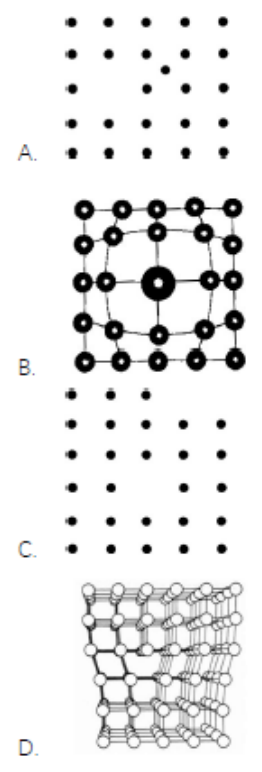

第四章习题
来源：习题 PDF《固体物理学 第四章习题》，1 页，5 题。原卷没有标分值。第 3 题图从原页裁出，方便对照。
填空 1
位错线和滑移矢量相垂直的位错叫做（ ），位错线与滑移矢量相平行的位错叫做（ ）。
参考答案
English
Edge dislocation; screw dislocation.
For an edge dislocation the slides say that the dislocation line is perpendicular to the slip direction and that there is an extra half-plane of atoms. For a screw dislocation the line is parallel to the slip direction, and the slip vector lies in the slip plane. That slip vector is the Burgers vector.
Source: the Chapter 4 PDF pages “刃型位错” and “滑移引起的螺型位错”.
中文
刃位错（刃型位错）；螺位错（螺型位错）。
课件对刃型位错写的特点是：位错线与滑移方向垂直，并多出一层半原子面。对螺型位错写的特点是：位错线与滑移方向平行，滑移矢量也在滑移面里。这里的滑移矢量就是伯氏矢量。
依据：第四章 PDF 中「刃型位错」「滑移引起的螺型位错」两页。
填空 2
晶体中的肖特基缺陷、弗伦克尔缺陷是晶体中最典型的热缺陷，二者同属于（ ）。
提示
题干已经称它们为热缺陷。空里要填的是按几何尺度的那一类，看缺陷涉及的是一个点、一条线，还是一个面。
参考答案
English
Point defects.
The slides classify defects by size as point defects, line defects and planar defects. A Schottky defect is an atom that leaves its site for the surface, leaving a vacancy inside. A Frenkel defect is an atom that moves into an interstitial site and leaves a vacancy. Both extend over one or a few atoms, so both are point defects, and both can be produced by thermal fluctuation.
Source: the classification page at the start of the Chapter 4 PDF, and the pages that define Schottky and Frenkel defects.
中文
点缺陷。
课件按几何尺度分成点缺陷、线缺陷和面缺陷。肖特基缺陷是原子离开格点后留在表面、晶体内部出现空位；弗伦克尔缺陷是原子进入间隙并留下空位。两者的尺度都是一个或几个原子，所以都是点缺陷，也都可以由热涨落产生。
依据：第四章 PDF 开头的分类页，以及肖特基、弗伦克尔的定义页。
看图 3
找出弗伦克尔缺陷。

原习题页上的四幅图。
参考答案
English
B.
- A is a vacant lattice site, the point-defect type associated with a Schottky defect. The drawing does not show an interstitial atom.
- B is an extra atom between the regular sites, an interstitial. The slides define a Frenkel defect as the pair “vacancy + interstitial”. This drawing shows only the interstitial, not the vacancy left when the atom moved. Of the four drawings, only B is an interstitial, so the choice is B.
- C has an extra column of atoms above the row. That is the half-plane of an edge dislocation, a line defect.
- D is two grains of different orientation meeting each other. That is a grain boundary, a planar defect.
Source: the Chapter 4 PDF definitions of a Frenkel defect, an edge dislocation and a grain boundary.
中文
B。
- A 是格点空位，对应肖特基缺陷那一类点缺陷，图上没有填隙原子。
- B 在完整格点之间多出一个原子，是填隙原子。课件把弗伦克尔缺陷定义成「空位 + 填隙原子」这一对；这张图只画出了填隙原子，没有同时画出它离开后留下的空位。四幅图里只有 B 表示填隙，所以选 B。
- C 上方多出一列原子，是刃位错的半原子面，属于线缺陷。
- D 是两侧取向不同的晶粒相接，属于晶界，是面缺陷。
依据：第四章 PDF 对弗伦克尔缺陷、刃位错和晶界的定义。
选择 4
刃位错的特点是（ ）。
- A. 晶格内部多了一层半原子面
- B. 晶格中出现空位
- C. 晶界方向发生扭曲
- D. 电子自由度增加
参考答案
English
A.
An edge dislocation is a line defect: an extra half-plane sits at the boundary between the slipped and unslipped regions, and the dislocation line is perpendicular to the slip direction. B is a vacancy, a point defect. C describes a grain boundary, a planar defect. D is not a geometric feature of a dislocation.
Source: Chapter 4 PDF, “刃型位错与它的滑移过程”.
中文
A。
刃位错是线缺陷：已滑移区和未滑移区的边界处多出半个原子面，位错线与滑移方向垂直。B 是点缺陷里的空位。C 描述的是晶界一类面缺陷。D 不是位错的几何特征。
依据：第四章 PDF「刃型位错与它的滑移过程」。
简答 5
什么是缺陷？简述点缺陷、线缺陷和面缺陷的类型及其影响。
参考答案
English
A crystal defect is a region in a real crystal where the atomic arrangement departs from the ideal, complete, periodic lattice.
(1) Point defects. All three dimensions are very small, and the disturbance is confined to the neighborhood of individual lattice sites. Types: Schottky defects, Frenkel defects, interstitial atoms and impurity atoms. Effects: they distort the lattice, raise the rate of atomic diffusion, and change the resistivity and density; they are important for color, luminescence, diffusion and phase changes.
(2) Line defects. These are one-dimensional: they extend a long way in one direction and are very small in the other two. The main example is the dislocation. Types: edge dislocations, screw dislocations and mixed dislocations. Effects: they determine plastic slip and deformation and affect the strength of the crystal; they have a large effect on yielding, work hardening and diffusion.
(3) Planar defects. These are two-dimensional: they extend in two directions and are very thin in the third. Types: grain boundaries, subgrain boundaries, stacking faults, phase boundaries, surfaces, and so on. Effects: they block dislocation motion, so refining the grains can raise the strength; they are fast paths for atomic diffusion; they affect corrosion, phase changes and recrystallization.
中文
晶体缺陷：实际晶体中，原子排列偏离理想完整周期性点阵结构的区域，称为晶体缺陷。
①点缺陷：三维尺度都很小，局限于个别格点附近。类型：肖特基缺陷、弗伦克尔缺陷、间隙原子、杂质原子。影响：造成晶格畸变；提高原子扩散速率；影响晶体的电阻率、密度；对晶体颜色、发光、扩散、相变有重要作用。
②线缺陷：一维缺陷，在一个方向延伸很长，另外两个方向尺度很小，主要就是位错。类型：刃位错、螺位错、混合位错。影响：决定晶体塑性滑移、形变；影响晶体强度；对晶体的屈服、加工硬化、扩散都有很大影响。
③面缺陷：二维缺陷，在两个方向上延伸，第三个方向很薄。类型：晶界、亚晶界、堆垛层错、相界、表面等。影响：阻碍位错运动，细化晶粒可以提高材料强度；是原子快速扩散通道；会影响材料的腐蚀、相变、再结晶行为。
The Chinese wording follows the supplied solution. Schottky and Frenkel stay paired with 肖特基 and 弗伦克尔; the dislocation names stay 刃位错, 螺位错 and 混合位错.
中文按提供的解答转录。英文是这段话的对应表述；Schottky、Frenkel 仍译作肖特基、弗伦克尔，位错类型用刃位错、螺位错、混合位错。